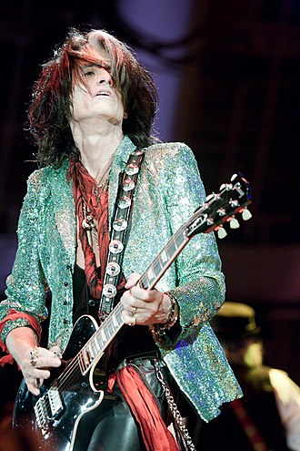
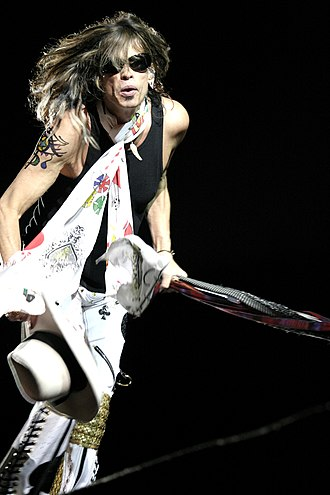

В 1970-е годы хард-рок стал одним из самых заметных поджанров рок-музыки.
В течение первой половины десятилетия британские группы, такие как Deep Purple,
Led Zeppelin, Uriah Heep, Black Sabbath, были на пике
своей международной известности, особенно в Соединенных Штатах.
Прогрессивный рок возник на основе блюз-рока и психоделического рока
конца 1960-х годов. В нем доминировали британские группы, это было частью
попытки поднять рок-музыку на новый уровень художественного авторитета.
King Crimson, а также Moody Blues считаются группами, утвердившими концепцию
"прогрессивного рока".
В конце 1970-х многие группы в Соединенном Королевстве начали экспериментировать
с синтезаторами, сформировав стиль новой волны, известный как синти-поп. Основные
синти-поп-группы того времени включали Gary Numan и Tubeway Army,
The Buggles, Human League и Orchestral Maneuvers in the Dark.
| Год | Событие | ||
|---|---|---|---|
| 1970 | Создана группа «Queen» | Группа «Black Sabbath» дебютирует | Распался квартет «The Beatles» |
| 1971-1979 | Основана рок-группа AC/DC | Основана рок-группа Kiss | Начинается сольная карьера Майкла Джексона |
| Оформился «классический состав» группы «Queen» | Панк-рок группа «Ramones» дала свой первый концерт в Нью-Йорке. | В Лондоне основана британская панк-рок-группа Sex Pistols | |
| Джерри Нолан и Джонни Сандерс покидают группу «New York Dolls» и совместно с Ричардом Хэллом основывают панк-группу «The Heartbreakers». | Образована хардкор-панк-группа Bad Brains | Pink Floyd как «группа-явление глобального мирового масштаба» | |
 Aerosmith (рус. Аэросмит, на английском произносится Эйросмит) — музыкальная группа, вероятно, самый важный представитель американского хард-рока.
Группа черпала своё вдохновение в британском блюз-роке, доминировавшем на рок-сцене в конце 1960-х и начале 1970-х, как, например, Cream, Led Zeppelin, Jeff Beck Group, а также the Rolling Stones.
 Хоть аэросмитовцев часто называют «плохими парнями из Бостона», ни для кого из участников этот город не родной. Стивен Талларико (Тайлер), Джо Перри и Том Хэмилтон впервые встретились в городке Сьюнапи в конце 1960-х годов.
Первый приехал из Нью-Йорка, второй из Массачусетса, а третий из Нью-Хэмпшира. В 1970 ребята решили объединиться в группу и решили, что Бостон станет для них идеальной базой.